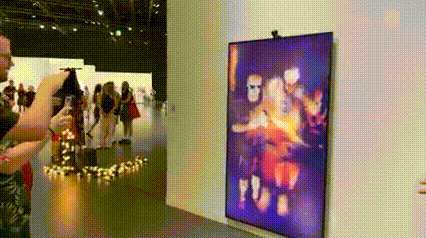

Sistemas interactivos y tecnología en tiempo real
El trabajo de Rafael Lozano-Hemmer se basa en el desarrollo de sistemas tecnológicos que reaccionan a la presencia humana. Utiliza dispositivos como cámaras, micrófonos y sensores biométricos para captar información del entorno y transformarla en respuestas visuales o sonoras.

Estas obras funcionan en tiempo real, generando una relación directa entre acción y resultado. El público no solo observa, sino que influye activamente en el comportamiento de la obra, creando experiencias personalizadas y colectivas al mismo tiempo.
Obras y conceptos clave
- Pulse Room
- Vectorial Elevation
- 33 Questions per Minute
- Body Movies
- Interactividad